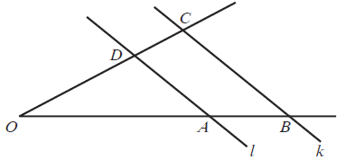

Matura 2012 listopad
Wartość liczby
\(a=16\sqrt[3]{4}\) jest równa wartości
liczby:
A.\( 2^{\frac{4}{3}} \)
B.\( 2^{\frac{7}{3}} \)
C.\( 2^{\frac{5}{3}} \)
D.\( 2^{\frac{14}{3}} \)
D
Miejscem zerowym funkcji \(f\) określonej wzorem \(f(x)=\begin{cases} x^2-1\quad
\text{ dla } x\in (-\infty ,-4 \rangle\\ 5x+10\quad \text{ dla } x\in (-4 ,2)\\ x+4\quad \text{ dla
} x\in \langle 2,+\infty ) \end{cases} \)
jest:
A.\( -4 \)
B.\( -2 \)
C.\( -1 \)
D.\( 1 \)
B
Funkcja \(f\), określona wzorem \(f(x)=x^2-3x-4\), przyjmuje wartości ujemne
jedynie w przedziale:
A.\( \left ( -\infty ,\frac{3}{2} \right) \)
B.\( (-\infty ,-1)\cup (4,+\infty ) \)
C.\( (-1,4) \)
D.\( (-4,1) \)
C
Wartość liczby \(25^{\log_{5}2}\) jest równa:
A.\( 2 \)
B.\( 4 \)
C.\( 5 \)
D.\( 2^5 \)
B
Dany jest ciąg \((a_n)\) o wyrazie ogólnym
\(a_n=-n^2+16\) dla \(n\ge 1\). Liczba dodatnich wyrazów tego ciągu jest
równa:
A.\( 3 \)
B.\( 4 \)
C.\( 5 \)
D.\( 7 \)
A
Kwotę \(10000\) zł wpłacamy do banku na \(4\) lata. Kapitalizacja odsetek jest
dokonywana w tym banku co kwartał, a roczna stopa procentowa wynosi \(3\%\). Po \(4\) latach kwotę
na rachunku będzie można opisać wzorem:
A.\( 10000\cdot (1{,}0075)^4 \)
B.\( 10000\cdot (1{,}03)^4 \)
C.\( 10000\cdot (1{,}03)^{16} \)
D.\( 10000\cdot (1{,}0075)^{16} \)
D
Dane liczby: \(x=\frac{3}{\sqrt{5}-2}, \ y=\frac{12}{\sqrt{5}-1}, \ z=3\sqrt{5}+2\)
tworzą rosnący ciąg arytmetyczny w kolejności:
A.\( z,y,x \)
B.\( y,x,z \)
C.\( x,y,z \)
D.\( z,x,y \)
A
Suma \(2n\) początkowych liczb naturalnych dodatnich parzystych jest równa:
A.\( S_{2n}=8n^2+4n \)
B.\( S_{2n}=4n^2+2n \)
C.\( S_{2n}=4n^2+n \)
D.\( S_{2n}=2n^2+2n \)
B
W trójkącie równoramiennym wysokość jest dwa razy dłuższa od podstawy. Wynika stąd,
że sinus kąta przy podstawie wynosi:
A.\( \frac{\sqrt{17}}{17} \)
B.\( \frac{\sqrt{5}}{5} \)
C.\( \frac{4\sqrt{17}}{17} \)
D.\( \frac{1}{17} \)
C
Dziedziną funkcji \(f\), określonej wzorem \(f(x)=\frac{x-5}{x^2+4}\), jest zbiór:
A.\( \mathbb{R} \backslash \{ -4,4 \} \)
B.\( \mathbb{R} \backslash \{ -4 \} \)
C.\( \mathbb{R} \)
D.\( \mathbb{R} \backslash \{ 5 \} \)
C
Liczbą przeciwną do liczby \(a=5^{\frac{2}{3}}\) jest:
A.\( 5^{\frac{3}{2}} \)
B.\( -5^{\frac{3}{2}} \)
C.\( 5^{-\frac{2}{3}} \)
D.\( -5^{\frac{2}{3}} \)
D
Wzór funkcji, której wykres powstaje przez przesunięcie wykresu funkcji \(f\) o
\(10\) jednostek w dół, to:
A.\( y=f(x+10) \)
B.\( y=f(x)+10 \)
C.\( y=f(x-10) \)
D.\( y=f(x)-10 \)
D
Rzucono sześcienną kostką do gry. Prawdopodobieństwo, że wyrzucona liczba oczek
jest liczbą pierwszą, wynosi:
A.\( \frac{4}{6} \)
B.\( \frac{3}{6} \)
C.\( \frac{2}{6} \)
D.\( \frac{1}{6} \)
B
Kąt \(\alpha \) jest ostry i \(\operatorname{tg} \alpha =\frac{12}{5}\). Wówczas
\(\cos \alpha \) jest równy:
A.\( \frac{5}{12} \)
B.\( \frac{5}{13} \)
C.\( \frac{10}{13} \)
D.\( \frac{12}{13} \)
B
Wielomian
\(W(x)=x^3-2x^2-4x+8\) po rozłożeniu na
czynniki ma postać wyrażenia:
A.\( x^2(x-2) \)
B.\( x^2(x-4) \)
C.\( (x+2)(x-2)^2 \)
D.\( (x-2)(x+2)^2 \)
C
Zbiór \((-\infty ,-8\rangle \cup \langle -4,+\infty )\) jest rozwiązaniem
nierówności:
A.\( |x-6|\le 2 \)
B.\( |x-6|\ge 2 \)
C.\( |x+6|\le 2 \)
D.\( |x+6|\ge 2 \)
D
Funkcja
\(f(x)=2x^2-4x+5\) jest malejąca w przedziale:
A.\( (2,+\infty ) \)
B.\( (-\infty ,2) \)
C.\( (-\infty ,1) \)
D.\( (1,+\infty ) \)
C
Proste \(l\) i \(k\) są prostopadłe i
\(l{:}\ 2x-9y+6=0,\ k{:}\
y=ax+b\). Wówczas:
A.\( a=-\frac{2}{9} \)
B.\( a=\frac{2}{9} \)
C.\( a=-\frac{9}{2} \)
D.\( a=\frac{9}{2} \)
C
Iloraz ciągu geometrycznego o wyrazie ogólnym \(a_n=2\cdot 7^n\) jest równy:
A.\( q=2 \)
B.\( q=7 \)
C.\( q=9 \)
D.\( q=28 \)
B
Równanie
\((x+6)^2+y^2=4\) opisuje okrąg o środku w
punkcie \(S\) i promieniu \(r\). Wówczas:
A.\( S=(-6,0),\ r=4 \)
B.\( S=(6,0),\ r=4 \)
C.\( S=(6,0),\ r=2 \)
D.\( S=(-6,0),\ r=2 \)
D
Długość promienia \(r\) okręgu opisanego na kwadracie jest równa \(2\sqrt{3}\).
Długość boku tego kwadratu ma wartość:
A.\( 4\sqrt{3} \)
B.\( 2\sqrt{6} \)
C.\( 4\sqrt{6} \)
D.\( 2\sqrt{5} \)
B
W turnieju szachowym, rozgrywanym systemem każdy z każdym, bez rewanżu, miało brać
udział \(8\) zawodników. Jeden z nich zrezygnował. Liczba zaplanowanych rozgrywek zmniejszyła się o:
A.\( 1 \)
B.\( 14 \)
C.\( 7 \)
D.\( 8 \)
C
Proste \(l\) i \(k\) są równoległe oraz
\(|OA|=6, |AB|=10,
|OC|=48\). Odcinek \(OD\) ma długość: 
A.\( 12 \)
B.\( 18 \)
C.\( \frac{18}{5} \)
D.\( \frac{144}{5} \)
B
W ciągu arytmetycznym \((a_n)\) drugi wyraz jest równy \(7\), a szósty \(17\).
Wyznacz pierwszy wyraz i różnicę tego ciągu.
\(a_1=\frac{9}{2}\), \(r=\frac{5}{2}\)
Średni wzrost sportowców w drużynie siatkarskiej, liczącej \(6\) chłopców, wynosił
\(174\) cm. Po przyjęciu do zespołu dwóch braci o tej samej wysokości średnia wzrostu zwiększyła się
o \(0{,}5\) cm. Oblicz, jak wysocy są bracia.
\(176\)
Rozwiąż równanie \(2x^3+8x^2-3x-12=0\).
\(x=-4\) lub \(x=-\frac{6}{2}\) lub \(x=\frac{6}{2}\)
Rozwiąż nierówność \(x^2-9>0\).
\(x\in (-\infty ;-3)\cup (3;+\infty )\)
Dana jest liczba \(a=\sqrt{(2-2\sqrt{5})^2}-2\sqrt{5}\).
Wykaż, że liczba \(a\) jest całkowita.
Długość krawędzi sześcianu zwiększono o \(20\%\). Oblicz, o ile procent wzrosła
objętość tego sześcianu.
\(72{,}8\%\)
Prosta \(y = x + 4\) przecina okrąg o równaniu \((x + 1)^2 + (y
- 2)^2 = 25\) w punktach \(A\) i \(B\). Oblicz współrzędne punktów \(A\) i \(B\), a
następnie oblicz obwód trójkąta \(ABS\), gdzie \(S\) jest środkiem danego okręgu.
\(A=(-5,1)\), \(B=(2,6)\), \(Ob=10+7\sqrt{2}\)
Dany jest ostrosłup prawidłowy trójkątny. Pole powierzchni bocznej tego ostrosłupa
jest równe \(24\), a kąt płaski ściany bocznej przy podstawie ma miarę \(\alpha \) i
\(\operatorname{tg} \alpha =2\). Wyznacz cosinus kąta nachylenia ściany bocznej ostrosłupa do
płaszczyzny jego podstawy.
\(\frac{\sqrt{3}}{6}\)
Turysta pokonał pieszo trasę długości \(30\) km z miejscowości \(A\) do
miejscowości \(B\) ze stałą prędkością. Rowerem poruszałby się z prędkością o \(9\) km/h większą i
przybyłby do celu o 3 godziny wcześniej. Wyznacz prędkość marszu turysty i czas przejścia tej drogi.
\(v=6\) km/h, \(t=5\) h